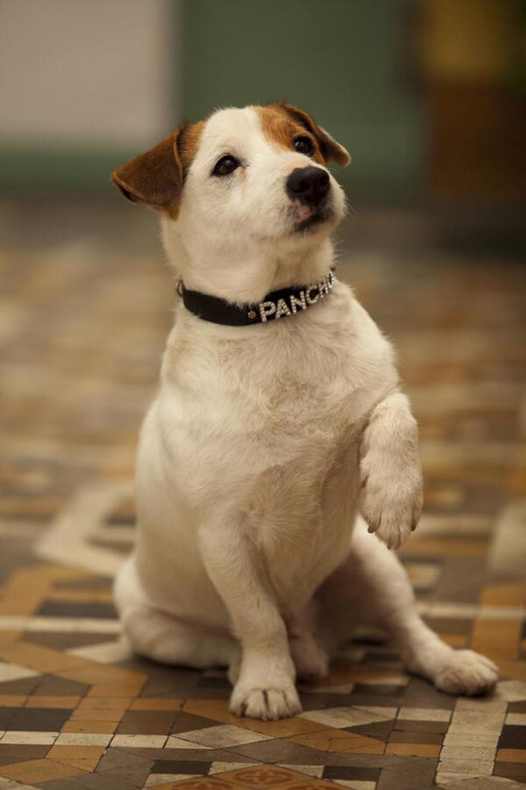

El perro pertenece a la especie de los cánidos.
Su tamaño, forma y pelaje varían en función de la raza de perro.
Se caracteriza por tener el olfato y el oído muy desarrollados. Emiten sonidos denominados ladridos.
Sus funciones son muy diversas según las cualidades, tamaño y carácter de cada perro.
Es un animal inteligente y leal a su amo, de ahí su fama de ser el mejor amigo del hombre.
Tamaño: 6,3 – 110 cm
Clase: Mammalia
Orden: Carnivora
Nombre científico: Canis lupus familiaris
Número de especies: 343 Peso: 5 – 60 kilogramos
Longevidad: 10 – 13 años
Alimentación: Omnívora
Reproducción: Vivípara
Distribución: Todo el planeta menos la Antártida
Período de gestación: 58 – 68 días
Origen: 15000 años
Los perros llevan con los humanos miles de años, acompañándonos
y siendo no solo nuestras mascotas, sino también nuestros defensores y compañeros de caza. En un primer momento, estos animales habían sido salvajes, muy cercanos a cómo viven actualmente una especie que se consideran de la misma familia como son los lobos, los zorros, entre otros. Sin embargo, gracias a la interacción constante con las personas, a los cuidados que estos les daban a los perros, fueron cada vez más acercándose a estos, terminando por criarlos y domesticarlos para las funciones anteriormente descritas. Las características físicas de los perros van a venir determinadas por la raza de la que hablemos, pero por lo general, van a contar con cuatro patas, siendo las traseras las más fuertes y con las que mejor van a caminar, ayudándole estas para saltar en cualquier caso que lo necesiten. Tienen un hocico alargado en la mayoría de los casos, con unos dientes afilados y grandes molares, que les ayudan a masticar mejor.
Conoce más dando clic AQUÍ